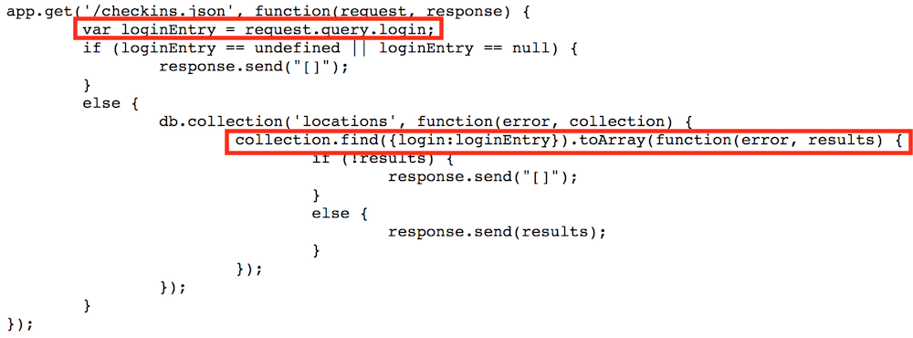

Introduction
I have been hired as a security consultant to document and resolve the security and privacy issues in a working Node.js + Express + MongoDB web application. The product is a Foursqaure type application that records users' latitude and longitude coordinates and time of check in.
Methodology
I used a simple black-box method and ran all of the code locally on my own computer. I also read and watched lectures that were posted online to use other ways to detect vulnerabilities.
Abstract of Findings
This program exposes itself to many security issues. Many of these security vulnerabilities are due to the fact that the app allows users to submit unexpected scripts that can manipulate the data within the program. Additionaly, the app can release unsanitized data that can contain confidential information. Lastly, the program uses frameworks to build the app, however if those frameworks are not secure, that leaves this app to be vulnerable to those insecurities.
Issues Found
Cross Site Scripting
- Allows attackers to bypass same-origin policy
- XXS has high severity due to the fact that the most severe XSS attacks involve disclosure of the user’s session cookie, allowing an attacker to hijack the user’s session and take over the account
- This issue was found in the POST requests in server-vuln.js, which requests login, lat and lng credentials. For example, running "curl --data "login=Lindsay&lat=100&lng=50" could affect a client
- This issue can be fixed by never inserting untrusted data except in allowed locations as well as HTML escape before inserting untrusted data into HTML element content
Injection
- Injection flaws occur when an application sends untrusted data to an interpreter. Injection flaws are very prevalent, particularly in legacy code. They are often found in SQL, LDAP, Xpath, or NoSQL queries.
- High severity due to the fact that injection can result in data loss or corruption, lack of accountability, or denial of access. Injection can sometimes lead to complete host takeover
- This issue is found in the image below in the red rectangles where the user input is passed directly into the MongoDB query without sanitization. 
- A way to ensure the safety of user data is to use a safe API, which avoids the use of the interpreter entirely or provides a parameterized interface.
Using Components with Known Vulnerabilities
- Components, such as libraries, frameworks, and other software modules, almost always run with full privileges. If a vulnerable component is exploited, such an attack can facilitate serious data loss or server takeover. Applications using components with known vulnerabilities may undermine application defenses and enable a range of possible attacks and impacts.
- The level of severity is medium, but can really span across all levels since the impact could range from minimal to complete host takeover and data compromise.
- Since this program was built using the Express framework, it is vulnerable to whatever security issues Express has.
- A way to avoid this vulnerability would be to not use any frameworks or libararies and build some of your own to use.
Conclusion